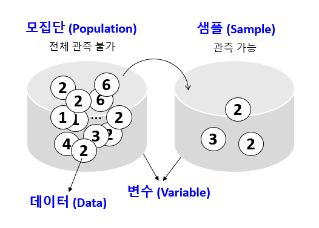

Chapter 3 Univariat data
3.1 Introduction
- Statistics
- 데이터 분석을 통한 예측 - 데이터를 수집, 정리하여 이로부터 미지의 사실에 대한 신빙성 있는 추론을 수행하는 과정

- Data - 사실을 나타내는 수치
- 맥도너 정보경제학 (1963)
- 지혜 (wisdom) : 패턴화된 지식
- 지식 (knowledge) : 가치있는 정보
- 정보 (information) : 의미있는 데이터
- 데이터 (data) : 단순한 사실의 나열
- Univariate: Single variable
- Data collection process
- Case: One of several different possible items of interest
- Variable: Some measurement of a case
- Univariate data set: A set of measurements for a variable
\[ x_1, x_2, ..., x_n \]
- Levels of measurement
- Nominal (명목형) – 사람 이름
- Ordinal (순서형) – 달리기 도착 순서
- Interval (구간형) – 선수1, 선수2 종점통과 시간
- Ratio (비율형) – 출발시간 기준 종점 통과 시간

- Data type in R
- Numeric data types
- Discrete (이산형) data - 카운트, 횟수
- Continuous (연속형) data - 키, 몸무게, Cannot be shared
- Factors data - Categories to group the data
- Character data - Identifiers
- Date and time
- Hierarchical data - 네트워크 구조
- Numeric data types
3.2 Data vectors
- Using combine function
#The number of whale beachings in Texas during the 1990s
whale <- c(74, 122, 235, 111, 292, 111, 211, 133, 156, 79)
#Object `whale` is a data vector == (univariate) data set
# The size
length(whale)
sum(whale)
sum(whale)/length(whale)
mean(whale)- Vectorization
- Adding values to a vector variable
- Missing/NULL values
- NA: Not available, The value is missing
- NULL: a reserved value
- NaN: Not a number (0/0)
- Inf: (1/0)
- Attributes: names in data vectors
head(precip)
class(precip)
length(precip)
names(precip)
order(names(precip))
test_scores <- c(100, 90, 80)
names(test_scores) <- c("Alice", "Bob", "Shirley")- Indexing
head(precip)
precip[1]
precip[2:10]
precip[c(1,3,5)]
precip[-1]
precip["Seattle Tacoma"]
precip[c("Seattle Tacoma", "Portland")]
precip[2] <- 10- Functions for generating structured data
3.3 Data type
- Numeric data
- Character data
- Combining strings - paste function
paste("X", 1:10)
paste("X", 1:10, sep="")
paste("The", "quick", "brown", "fox")
paste(c("The", "quick", "brown", "fox"))
paste(c("The", "quick", "brown", "fox"), collapse=" ")
x <- 1:10
paste(x)
paste(x, collapse=":")- Factors
- Adding a level
- Odered factors (ex. 위치 바꾸기)
#library(UsingR)
str(Cars93)
x <- Cars93$Origin
plot(x)
levels(x) <- c("non-USA", "USA")
levels(x)
plot(x)- Logical data
- TRUE and FALSE
- “is” functions
- Comparison by
<,<=,==,!=,>=,> - Combination by
!,&,|
is.na(1)
is.numeric(1)
is.logical(TRUE)
pi < 3
precip < 30
which(precip < 30)
any(precip < 30)
all(precip < 30)
any(39 == precip)
which(39 == precip)
sum(precip < 30)
sum(c(TRUE, TRUE))
x <- Cars93$Origin
x == "USA"
which(x == "USA")
i <- which(x == "USA")
x[i]
x <- 1:100
x < 10
x > 90
x < 10 | x >90
which(x < 10 | x >90)
i <- which(x < 10 | x >90)
x[i]
x[x < 10 | x >90]- Date and time
- Unixtime, POSIX time
- 1970년 1월 1일 00:00:00 협정 세계시(UTC) 부터의 경과 시간을 초로 환산
- 32비트로 표현된 유닉스 시간은 1970년 1월 1일 00:00 (UTC)에서 2,147,483,647 (231 - 1) 지난 후인 2038년 1월 19일 03:14:08 UTC에 2038년 문제를 발생시킨다. 이는 산술 오버플로와 관련 있는 문제이다. –wiki-
library(lubridate)
current_time <- now() # record since 1970
as.numeric(current_time)
as.numeric(now())
month(current_time)3.3.1 Example - Recoding values
다음은 신생아들의 키를 나타내는 data set 이다. 오류 값을 찾아내고 이들 값을 NA로 바꾼 후 평균 값을 구하라.
3.4 Functions
- Define a function
- Write a function named
get_distfor the example 3.3.2, and use it for theriversdata
3.5 Numeric summaries


- 대푯값
- Center – commonly known as “average” or “mean” but not the only one.
- median, mode, etc
- Spread – Variability of a data set.
- No variability – mean is everything
- Large variability – mean informs much less
- confidence of interpretation from knowing center
- Distance from center
- Shape – Degree of interpretation from knowing center and spread.
- eg. bell shape – two sides are equally likely, large values are rather unlikely and values tend to cluster near the center.
3.6 Center
3.6.1 Sample mean
\[ \bar{x} = \frac{1}{n} (x_1 + x_2 + ... + x_n) = \frac{1}{n}\sum_i{x_i} \]
head(kid.weights)
str(kid.weights)
wts <- kid.weights$weight
length(wts)
plot(wts)
mean(wts)
devs <- wts – mean(wts) # deviation, centering
plot(wts)
mean(wts)- Trimmed mean
3.6.2 Measure of Position
- _p_th Quantile - 특정 값으로 이 값보다 작은 데이터의 비율이 100∙p 퍼센트, 큰 데이터의 비율은 100∙(1- p) 퍼센트
- Median - Splits the data in half p=0.5
- Percentiles - The same as quantile but its scale is 0 to 100
- Robustness
mean(wts)
median(wts)
plot(wts)
abline(h=mean(wts), col="red")
abline(h=median(wts), col="blue")
wts2 <- wts[wts<120]
abline(h=mean(wts2), col="red", lty=2)- Boxplot
x <- 0:5
quantile(x)
boxplot(x)
text(x=1.3, y=quantile(x, 0.25), labels = "1사분위수")
text(x=1.3, y=quantile(x, 0.5), labels = "2사분위수")
text(x=1.3, y=quantile(x, 0.75), labels = "3사분위수")
3.7 Spread

- Range - the distance between the smallest and largest values
- Sample variance
- Distance - \[ d_i = x_i - \bar{x} \]
\[\begin{equation} s^2 = \frac{1}{n-1}\sum_i(x_i - \bar{x})^2 \end{equation}\]
- Sample standard deviation
- 측정값들이 평균에서 떨어진 정도 \[\begin{equation} \sqrt{s^2} = sqrt{ \frac{1}{n-1}\sum_i(x_i - \bar{x})^2 } \end{equation}\]
wts <- kid.weights$weight
var(wts)
sd(wts)
plot(wts)
boxplot(wts)
hist(wts)
hist(wts, breaks = 50)
hist(wts, 50)
abline(v=mean(wts), col="red")- z-score
- How big (small) is the value relative to the others
- \(z=3\) 이 값은 평균에 비해 3 표준편차만큼 크다
\[\begin{equation} z_i = \frac{x_i - \bar{x}}{s} \end{equation}\]
- Example - z score wts의 z 값을 구하는 함수를 만들고 histogram을 그리시오
- Interquartile range (IQR)
- Middle 50% of the data
- Difference between Q3 and Q1

- Example - IQR
wts 변수 값들의 IQR 을 구하시오
3.8 Shape
- Symmetry and skew
\[\begin{equation} sample skewness = \sqrt{n} \frac{\sum{(x_i - \bar{x})^2}}{(\sum{(x_i - \bar{x})^2)^{3/2}}} = \frac{1}{n}\sum{z_i^3} \end{equation}\]
myskew <- function(x){
n <- length(x)
z <- (x-mean(x))/sd(x)
return(sum(z^3)/n)
}
wts <- kid.weights$weight
hist(wts, 50)
myskew(wts)
z <- rnorm(length(wts))
hist(z, br=50)
myskew(z)- Sample excess kurtosis
- Measure of tails
\[\begin{equation} sample excess kurtosis = n \frac{\sum{(x_i - \bar{x})^4}}{(\sum{(x_i - \bar{x})^2)^2}} -3 = \frac{1}{n}\sum{z_i^4} - 3 \end{equation}\]
3.9 Viewing the shape
- Dot plots – Trouble with repeated values, only used for small data sets
- Stem and leaf plot – Shows range, median, shape. But only for small data sets. trouble with clustered data. Rounding
- Histogram – Break up an interval, for each subinterval the number of data points are counted
- Density plots
wts <- kid.weights$weight
xrange <- range(wts)
den <- density(wts)
plot(den, xlim=xrange, xlab="densities", main="")
- Boxplots
- It shows center, spread, shape
- Five-number summary of a univariate data set: min, max, Q1, Q3, and median
- These are good summary of even very large data sets.
- Outliers – 1.5 x IQR